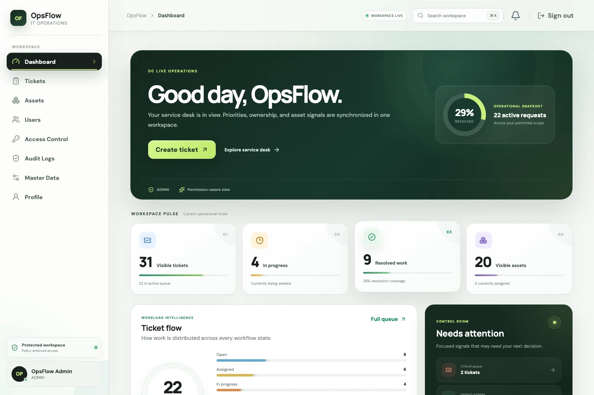

Reliable by design.
Backend and full-stack developer building thoughtful software for complex operations.
Explore selected work
OpsFlow
Service desk & asset operations
Laravel / React / PostgreSQL
Backend and full-stack developer building thoughtful software for complex operations.
Explore selected work
Service desk & asset operations
Laravel / React / PostgreSQL